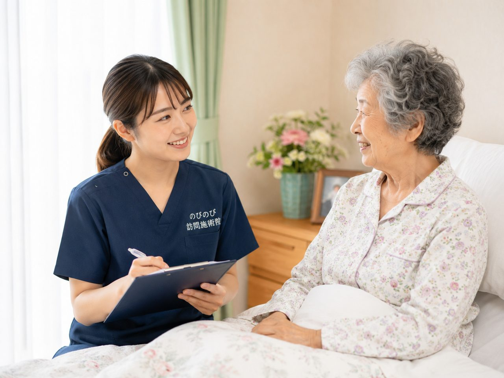
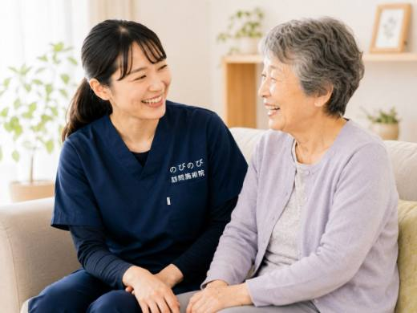
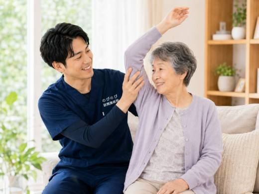
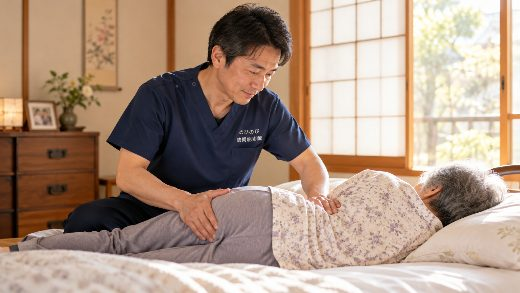

布団やベッドで過ごす時間が増えると、いつのまにか肩甲骨のあいだや背中がこわばり、寝返りのたびに重だるさを感じる。そんなお声を、ご家族やご本人からよくうかがいます。首や肩のこりとはまた違う、背中側のつらさです。自分では手が届きにくい場所だからこそ、ご自宅にうかがう鍼灸・マッサージでお手伝いできることがあります。
要点から。横になって過ごす時間が長い高齢の方は、肩甲骨まわりや背中がはり、こわばりやすくなります。訪問鍼灸マッサージでは、鍼やお灸を中心に、そのこわばりをやわらげるケアをご自宅で行います。背中の張りにともなう痛みなどで医師が必要と認め、通院がむずかしい状態なら、はり・きゅうの医療保険の対象になる場合があります。急に強い痛みが出た、手や腕にしびれをともなうといったときは、まず医療機関を受診してください。
なぜ横になる時間が長いと背中がはるのか
体を起こして動いている時間が短くなると、肩甲骨のまわりや背骨に沿った筋肉が縮んだまま固まりがちです。仰向けやよこ向きの姿勢が続くと、同じ場所に体重がかかり、背中の一部だけがこわばってしまいます。加えて、腕を大きく動かす機会が減ることで、肩甲骨そのものの動きも小さくなり、まわりの筋肉が張ったままになります。こうした積み重ねが、背中の重だるさやはりとして感じられます。
呼吸が浅くなりがちなことも関係します。深く息を吸うと胸郭が広がり、背中側の筋肉も自然に伸び縮みしますが、寝ている時間が長いとその動きが乏しくなります。背中の張りは、単なる筋肉のこわばりだけでなく、日々の姿勢や動きの少なさが少しずつ重なった結果でもあるわけです。
背中のはりは受診した方がいい？見分けの目安
背中のこわばりの多くは、姿勢や動きの少なさからくるものですが、なかには早めに医療機関で確かめたほうがよいものもあります。急に強い痛みが出た、背中から胸や脇腹にかけて締めつけられるような痛みがある、手や腕にしびれや力の入りにくさをともなう、といった場合です。発熱をともなう背中の痛みや、安静にしていてもうずく痛みが続くときも、まず受診をおすすめします。
とくに、これまで感じたことのない急な強い痛みや、息苦しさをともなう痛みは、体のほかの不調が背中に現れていることもあります。こうしたサインがあるときは、鍼灸を考える前に医療機関で診てもらうことが先です。落ち着いて経過を見てよいのか、受診が先かの見きわめは、迷ったら遠慮なくご相談ください。
ご自宅にうかがって、まず確かめること
訪問して最初に行うのは、背中のどこがどのようにこわばっているかを、ていねいに触れて確かめることです。肩甲骨のあいだなのか、背骨に沿った縦の筋肉なのか、それとも肩甲骨の外側なのか。張っている場所によって、体のどんな使い方や姿勢が関わっているのかが見えてきます。ふだんどんな姿勢で長く過ごしているか、寝返りは自分で打てるか、といったこともうかがいます。
背中だけを見て終わりにしないのが、訪問での大切な点です。首から肩、腰、そして呼吸のしやすさまで含めて全体を確かめます。背中のはりが、実は肩まわりの動きの乏しさや、腰のこわばりとつながっていることも少なくないためです。痛む場所だけでなく体全体をみるなかで、ご本人も気づいていなかった動かしにくさに気づけることもあります。
鍼やお灸で肩甲骨まわりをゆるめる
こわばった背中には、鍼やお灸で筋肉のこわばりをやわらげ、めぐりをうながすケアを行います。肩甲骨のあいだや背骨に沿った部分は、自分では手が届きにくく、ご家族がさすってあげてもなかなかゆるみにくい場所です。細い鍼で深いところのこわばりにそっと働きかけ、お灸のあたたかさで固まった筋肉をゆるめていきます。
鍼灸に加えて、肩甲骨まわりを軽く動かす機能訓練を組み合わせることもあります。腕をゆっくり動かして肩甲骨の動きを保ったり、呼吸に合わせて背中を伸ばしたり。強く押したりひねったりするのではなく、その日の体調に合わせて、心地よいと感じられる範囲でゆっくり進めます。
通うのがつらい方が、寝たまま受けられる
背中がつらい方にとって、施術のために外出して椅子に座り続けたり、順番を待ったりすること自体が大きな負担になります。訪問鍼灸マッサージなら、いつも過ごしている布団やベッドで、寝たままの姿勢で受けられます。移動の疲れがないぶん、背中をゆるめることそのものに時間を使えます。
背中をほぐしたあと、うかがうこと
こわばっていた肩甲骨まわりがゆるむと、胸が開いて呼吸が深くしやすくなり、寝返りのときに体をひねる余裕も生まれます。背中の張りは呼吸の浅さと結びついているため、そこを整えることが休息の質を支えます。感じ方には個人差があります。
一方で、変わらないとおっしゃる方もいます。感じ方には個人差があり、どなたにも同じ変化をお約束できるものではありません。それでも、つらかった背中が少しでも楽になり、日々の過ごし方にゆとりが生まれることを目指して、その日の体に合わせたケアを重ねていきます。
ご家庭で背中を楽に保つ工夫
施術の合間にご家庭でできることもあります。寝ている時間が長い方でも、日中に少し体を起こして過ごす時間をつくると、背中への負担が一か所に集中しにくくなります。無理のない程度に肩を軽く回したり、深呼吸をゆっくり繰り返したりするだけでも、肩甲骨まわりの動きを保つ助けになります。
枕やクッションの位置を少し調整して、背中に無理のない姿勢をつくることも大切です。同じ姿勢が続かないよう、可能であれば体の向きをときどき変えられると、こわばりの予防につながります。ご本人の力だけでは難しい場合は、うかがったときに一緒に工夫を考えますので、気負わずご相談ください。
背中が丸くなっている方は、あお向けで背中が浮いてしまうことがあります。その場合の枕やクッションの当て方は、円背の方の座り方・寝かせ方｜車いす・食事・ベッドの支え方に場面ごとにまとめています。
どれくらいの間隔で受けるとよい？
背中のこわばりが強い時期は、週に何度か短い間隔でうかがい、少しずつゆるめていくことが多いです。楽な状態を保てるようになってきたら、間隔をあけていきます。生活のリズムやご希望、ほかの在宅サービスの予定に合わせて、無理のない頻度を一緒に決めていきますので、まずは今のつらさをお聞かせください。
費用と保険のこと
背中・肩甲骨まわりの慢性的な痛み・こわばりについて、医師が鍼やお灸を必要と認め、通院がむずかしい状態であれば、はり・きゅうの医療保険が使える場合があります。1回の総額は3,950円で、自己負担は負担割合の分のみ。1割の方でおよそ395円が目安です。公的な医療保険にもとづく正規のしくみで、介護保険の限度額とは別枠です。対応エリア内であれば出張費は別にかからず、集金は月ごとにまとめて行い、その月の施術の内訳がわかる明細をお渡しします。費用の内訳は訪問鍼灸マッサージの料金にまとめています。
受けはじめるまでの流れ
はじめに、お電話などで、背中のどのあたりがつらいか、ふだんどんな姿勢で過ごしているか、通院の状況をお聞かせください。医師の見立てをふまえ、肩甲骨まわりへ鍼灸でできることをご説明します。寝たままでも受けられますので、姿勢のことはご心配いりません。同意書の手続きは当院が段取りします。
よくある質問
寝て過ごす時間が長いと肩甲骨まわりが固まりますか？
動かす機会が減ると、肩甲骨まわりがこわばりやすくなります。穏やかに動かし、和らげるケアができます。
寝たままでも肩甲骨まわりを受けられますか？
はい。横になったままでも、背中や肩甲骨まわりを無理なく施術します。
肩甲骨まわりでも保険で受けられますか？
背中・肩甲骨まわりの慢性的な痛み・こわばりについて医師が必要と認め、通院がむずかしければ対象になる場合があります。
肩甲骨のこわばり予防に家族が手伝えることは？
同じ姿勢が続かないよう体の向きを変える、軽く肩を動かすなどをお伝えします。体の様子を見ながら続けることが大切です。
費用は1回いくらですか？
1回の総額は3,950円で、自己負担は負担割合の分のみです。1割の方でおよそ395円が目安になります。対応エリア内であれば出張費は別にかかりません。
どのあたりまで来てもらえますか？
豊中・吹田・茨木・箕面・摂津・池田、尼崎・伊丹、大阪市の淀川区・東淀川区・都島区・北区・旭区にうかがっています。
円背と亀背の違いは？背中が丸くなる原因と、自宅でできるケア
続きを読むわき腹・背中の刺すような痛み（肋間神経痛）でお悩みの方へ｜訪問鍼灸マッサージ
続きを読む
五十肩とは違う肩のトラブル｜腱板の傷みや肩の動かしにくさと在宅ケア
続きを読む
床ずれ予防と寝返り介助｜在宅でできる褥瘡ケアと訪問鍼灸マッサージ
続きを読む
訪問鍼灸マッサージは1回どれくらい？施術時間と当日の流れの目安
続きを読む